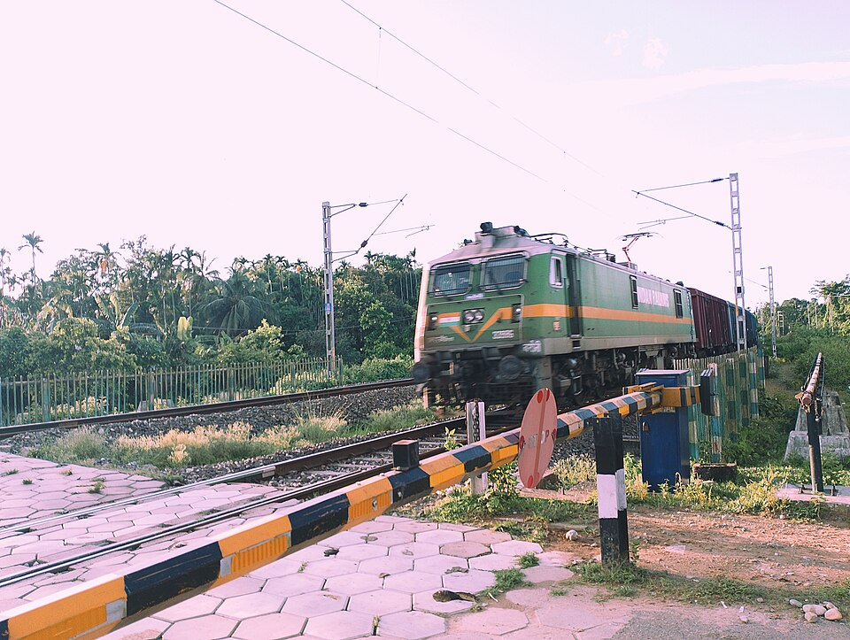

खेल
खेलभारत और न्यूज़ीलैंड के बीच वेलिंगटन टेस्ट ड्रॉ, 352 रन की बढ़त के बाद भी नहीं मिली जीत
वेलिंगटन टेस्ट में पहली पारी में 352 रन की बढ़त लेने के बावजूद भारतीय टीम न्यूज़ीलैंड को हरा नहीं सकी। आखिरी दिन मैच ड्रॉ रहने के बाद कप्तान शुभमन गिल ने गेंदबाजों की थकान और गेंद की गुणवत्ता का हवाला दिया।
ताज़ा ख़बरें
मथुरा पुलिस ने शादी समारोहों में चोरी करने वाले कड़िया सांसी गैंग के 120 चेहरे किए जारी
मथुरा पुलिस ने शादी समारोहों में नकदी और आभूषण चुराने वाले अंतरराज्यीय कड़िया सांसी गिरोह के 120 से अधिक सदस्यों की तस्वीरें जारी कर लोगों को सतर्क रहने की चेतावनी दी है।
राष्ट्रीयकौशांबी में प्रेमी से शादी के विरोध पर बेटी ने रची मां की हत्या की साजिश
उत्तर प्रदेश के कौशांबी में प्रेमी से शादी की जिद में बेटी ने मां की हत्या कर दी। पुलिस ने आरोपी बेटी और उसके प्रेमी को गिरफ्तार कर लिया है।
राष्ट्रीयउत्तर प्रदेश विधानसभा चुनाव 2027: समाजवादी पार्टी और कांग्रेस के बीच सीट शेयरिंग पर बैठक
साल 2027 के उत्तर प्रदेश विधानसभा चुनाव के लिए समाजवादी पार्टी और कांग्रेस ने सीट बंटवारे को लेकर शुरुआती चर्चा शुरू कर दी है। दोनों दलों के नेताओं ने बैठक को सकारात्मक बताया है।
 राष्ट्रीय
राष्ट्रीयप्रधानमंत्री नरेंद्र मोदी पहली बार जाएंगे दिल्ली के उपराज्यपाल आवास
प्रधानमंत्री नरेंद्र मोदी गुरु नानक देव के प्रकाश पर्व के अवसर पर दिल्ली के उपराज्यपाल आवास पर आयोजित शबद कीर्तन कार्यक्रम में शामिल होंगे।
 अंतरराष्ट्रीय
अंतरराष्ट्रीयआर्मेनिया के प्रधानमंत्री पशिनयान ने विवादित काराबाख क्षेत्र पर दावा छोड़ने के संकेत दिए
आर्मेनिया के प्रधानमंत्री निकोल पशिनयान ने अजरबैजान के साथ लंबे विवाद को समाप्त करने के लिए देश के संविधान में बदलाव और काराबाख पर दावा छोड़ने के संकेत दिए हैं।
टेकअमेजन प्राइम वीडियो पर रिलीज हुआ वेब सीरीज 'पंचायत 5' का ट्रेलर
लोकप्रिय वेब सीरीज 'पंचायत' के पांचवें सीजन का ट्रेलर जारी कर दिया गया है। फुलेरा गांव में इस बार बदले हुए राजनीतिक समीकरण और नए प्रशासनिक संघर्ष देखने को मिलेंगे।
 राष्ट्रीय
राष्ट्रीयमथुरा में धीरेंद्र शास्त्री को कंस के रूप में दिखाने पर विवाद, डीएम को ज्ञापन
मथुरा के कंस वध मेले में बागेश्वर धाम के पीठाधीश्वर धीरेंद्र कृष्ण शास्त्री को कंस के रूप में दर्शाने वाली झांकी पर विवाद खड़ा हो गया है। उनके समर्थकों ने जिला प्रशासन से शिकायत कर कार्रवाई की मांग की है।
राष्ट्रीयउत्तर प्रदेश चुनाव: कांग्रेस और सपा के बीच सीट बंटवारे पर जल्द बन सकती है सहमति
उत्तर प्रदेश विधानसभा चुनाव 2027 के लिए कांग्रेस और समाजवादी पार्टी के बीच सीट बंटवारे को लेकर बातचीत आगे बढ़ रही है। दोनों दलों के नेताओं के अनुसार अगले दो से तीन दिनों में समझौता होने की संभावना है।
टेकबिग बॉस 20 के घर में मौजूद गेमर स्काउट ओपी को जीटीए 6 लॉन्च पर कर रहे याद
रियलिटी शो बिग बॉस 20 में हिस्सा ले रहे भारतीय ईस्पोर्ट्स प्लेयर तन्मय सिंह उर्फ स्काउट ओपी को जीटीए 6 के लॉन्च के बीच फैंस सोशल मीडिया पर याद कर रहे हैं।
 राष्ट्रीय
राष्ट्रीयपश्चिम बंगाल का नाम बदलने की तैयारी, 9 दिसंबर को विधानसभा में आएगा प्रस्ताव
पश्चिम बंगाल का नाम बदलकर ‘पश्चिम बंगा’ करने का प्रस्ताव 9 दिसंबर को विधानसभा में पेश किया जाएगा। कैबिनेट बैठक में यह निर्णय लिया गया है।
 राष्ट्रीय
राष्ट्रीयपश्चिम बंगाल SIR: सुप्रीम कोर्ट का ईसीआई को न्यायाधिकरण बढ़ाने और नाम हटाने के मामलों को प्राथमिकता देने का निर्देश
सुप्रीम कोर्ट ने चुनाव आयोग को पश्चिम बंगाल में चुनावी सूची से नाम हटाने के खिलाफ अपील सुनने वाले न्यायाधिकरणों की संख्या बढ़ाने और ऐसे मामलों को प्राथमिकता देने का निर्देश दिया है।
खेलशोएब अख़्तर का दावा, उनके दौर में पाकिस्तानी खिलाड़ी भी करते थे बॉल टैंपरिंग
पाकिस्तान के पूर्व तेज़ गेंदबाज़ शोएब अख़्तर ने एक इंटरव्यू में स्वीकार किया है कि उनके खेलने के दौर में पाकिस्तानी खिलाड़ी भी बॉल टैंपरिंग करते थे। उन्होंने कहा कि इसके लिए बोतलों के ढक्कनों का इस्तेमाल किया जाता था।
राष्ट्रीयफरीदाबाद में देश विरोधी और पाकिस्तान के समर्थन में नारे लगाने वाला गिरफ्तार
हरियाणा के फरीदाबाद में विवाद के दौरान पाकिस्तान और आतंकी संगठनों के समर्थन में नारे लगाने का वीडियो वायरल होने के बाद पुलिस ने आरोपी सुन्नी खान को गिरफ्तार कर लिया है।
राष्ट्रीयकरीना और करिश्मा के संडे लंच में शामिल हुईं सुप्रिया सुले
मुंबई में रीमा जैन के आवास पर आयोजित फैमिली लंच में करीना कपूर, करिश्मा कपूर और एनसीपी नेता सुप्रिया सुले शामिल हुईं। इस दौरान अरमान जैन ने खुद खाना बनाया।
राष्ट्रीयदिल्ली के एक कैफे में पाकिस्तानी ड्रामे की स्क्रीनिंग पर सोशल मीडिया पर बहस
दिल्ली के एक कैफे में पाकिस्तानी ड्रामा 'दर-ए-नजात' की स्क्रीनिंग का वीडियो सामने आने के बाद सोशल मीडिया पर मिली-जुली प्रतिक्रियाएं और बहस छिड़ गई है।
 अंतरराष्ट्रीय
अंतरराष्ट्रीयनेपाल में खुलेगा भारतीय प्रौद्योगिकी संस्थान का ऑफशोर कैंपस: प्रधानमंत्री मोदी
प्रधानमंत्री नरेंद्र मोदी ने घोषणा की है कि नेपाल में भारतीय प्रौद्योगिकी संस्थान (IIT) का एक ऑफशोर कैंपस स्थापित किया जाएगा।
राष्ट्रीयसुप्रीम कोर्ट ने दल-बदल कानून में बदलाव की मांग पर केंद्र और चुनाव आयोग से मांगा जवाब
सुप्रीम कोर्ट ने दल-बदल कानून में संशोधन की मांग वाली याचिका पर केंद्र सरकार, चुनाव आयोग, लॉ कमीशन और मंत्रालयों को नोटिस जारी किया है। याचिका में इस्तीफे के जरिए अयोग्यता से बचने की प्रवृत्ति पर रोक लगाने की मांग की गई है।
 व्यापार
व्यापारशेयर बाजार में बड़ी गिरावट, सेंसेक्स 1,065 अंक टूटा और निवेशकों के 3 लाख करोड़ डूबे
भारतीय शेयर बाजार में भारी बिकवाली के बीच सेंसेक्स 1,065 अंक लुढ़क गया। इस गिरावट से निवेशकों के 3 लाख करोड़ रुपये से अधिक डूब गए हैं।
 खेल
खेलन्यूजीलैंड के खिलाफ पहले टेस्ट में मोहम्मद सिराज को क्यों बैठाया गया था बेंच पर, कप्तान शुभमन गिल ने बताई वजह
न्यूजीलैंड के खिलाफ पहला टेस्ट ड्रॉ होने के बाद भारतीय कप्तान शुभमन गिल ने मोहम्मद सिराज को प्लेइंग इलेवन से बाहर रखने के फैसले पर सफाई दी है।
 खेल
खेलराइजिंग स्टार एशिया कप: पाकिस्तान ए ने भारत ए को 48 रनों से हराया
राइजिंग स्टार एशिया कप के मुकाबले में पाकिस्तान ए ने भारत ए को 48 रनों से हरा दिया। अभिषेक शर्मा और कप्तान तिलक वर्मा के शानदार प्रदर्शन के बावजूद भारतीय टीम लक्ष्य हासिल करने में नाकाम रही।
राष्ट्रीयगाजियाबाद में दिल्ली-मेरठ एक्सप्रेसवे पार कर रहे दंपती और बेटे की सड़क हादसे में मौत
गाजियाबाद के क्रॉसिंग रिपब्लिक क्षेत्र में दिल्ली-मेरठ एक्सप्रेसवे पार कर रहे एक ही परिवार के तीन सदस्यों को तेज रफ्तार स्कॉर्पियो ने टक्कर मार दी, जिससे उनकी मौके पर ही मौत हो गई।
 अंतरराष्ट्रीय
अंतरराष्ट्रीयइसराइल और ग़ज़ा पर राहुल गांधी के बयान से राजनीतिक हलकों में बहस
लोकसभा में नेता प्रतिपक्ष राहुल गांधी के इसराइल के साथ मजबूत संबंधों के समर्थन और ग़ज़ा कार्रवाई की निंदा वाले बयान पर वाम दलों ने आपत्ति जताई है।
अंतरराष्ट्रीयअमेरिका के ओहायो में बेबी शॉवर के दौरान गोलीबारी, संदिग्ध समेत तीन की मौत
अमेरिका के ओहायो राज्य में एक गोद भराई समारोह के दौरान हुई गोलीबारी में संदिग्ध हमलावर समेत तीन लोगों की मौत हो गई और एक महिला घायल हो गई। पुलिस मामले की जांच कर रही है।

राष्ट्रीयभारतीय रेलवे की करंट टिकट बुकिंग सुविधा, चार्ट बनने के बाद ऐसे पाएं सीट
ट्रेन में कन्फर्म टिकट नहीं मिलने पर यात्री IRCTC के जरिए करंट टिकट बुक कर सकते हैं। यह सुविधा ट्रेन का चार्ट तैयार होने के बाद खाली बची सीटों के लिए मिलती है।
खेलएशिया कप राइजिंग स्टार्स: पाकिस्तान ए ने भारत ए को हराया
दोहा में खेले गए एसीसी इमर्जिंग टीम्स एशिया कप 2026 के मुकाबले में पाकिस्तान ए ने भारत ए को 48 रन से हरा दिया है। मैच के दौरान दोनों टीमों के बीच तनाव और खिलाड़ियों के व्यवहार की भी चर्चा रही।
खेलभारत और न्यूजीलैंड के बीच पहला टेस्ट मैच ड्रॉ, कप्तान शुभमन गिल ने कही यह बात
भारत और न्यूजीलैंड के बीच वेलिंगटन में खेला गया पहला टेस्ट मैच ड्रॉ पर समाप्त हुआ। कप्तान शुभमन गिल ने मैच के बाद कहा कि पिच पर दस विकेट लेना एक बड़ी चुनौती थी।
 राष्ट्रीय
राष्ट्रीयसरकार की यूनिवर्सल सब्सिडी योजना का दावा फर्जी, पीआईबी ने दी चेतावनी
सोशल मीडिया पर वायरल हो रहा वह दावा फर्जी है, जिसमें 2026 की सरकारी यूनिवर्सल सब्सिडी योजना के तहत हर नागरिक को ₹30,000 मिलने की बात कही जा रही है।
राष्ट्रीयएआर रहमान ने नितेश तिवारी की फिल्म 'रामायण' के लिए छोड़े 12 प्रोजेक्ट
ऑस्कर विजेता संगीतकार एआर रहमान ने खुलासा किया है कि उन्होंने नितेश तिवारी की फिल्म 'रामायण' के संगीत पर ध्यान केंद्रित करने के लिए करीब 10 से 12 फिल्मों के प्रस्ताव ठुकरा दिए।
 अंतरराष्ट्रीय
अंतरराष्ट्रीयबाल्टिक सागर के नीचे बन रही 18 किलोमीटर लंबी फेहमार्नबेल्ट सुरंग
डेनमार्क और जर्मनी को जोड़ने वाली 18 किलोमीटर लंबी पानी के नीचे की सुरंग का निर्माण तेजी से जारी है। इस प्रोजेक्ट के तहत सड़क और रेल मार्ग दोनों की सुविधा मिलेगी।
 अंतरराष्ट्रीय
अंतरराष्ट्रीयनेपाल के प्रधानमंत्री बालेंद्र शाह ने की प्रधानमंत्री मोदी से मुलाकात
नेपाल के प्रधानमंत्री बालेंद्र शाह दो दिवसीय भारत दौरे पर हैं। नई दिल्ली के हैदराबाद हाउस में प्रधानमंत्री नरेंद्र मोदी के साथ उनकी द्विपक्षीय बैठक हुई।
व्यापारगरीबी का दायरा सिर्फ कमाई तक सीमित नहीं, 2011-23 में 50 करोड़ लोग उभरे: निर्मला सीतारमण
वित्त मंत्री निर्मला सीतारमण ने कहा है कि गरीबी केवल आमदनी की कमी नहीं है। वर्ल्ड बैंक की रिपोर्ट के हवाले से उन्होंने बताया कि 2011 से 2023 के बीच देश में करीब 50 करोड़ लोग गरीबी से बाहर आए हैं।
 व्यापार
व्यापारदिल्ली का इंदिरा गांधी अंतरराष्ट्रीय एयरपोर्ट टाइम मैगजीन की सूची में 38वें स्थान पर
दिल्ली के इंदिरा गांधी अंतरराष्ट्रीय हवाई अड्डे ने टाइम मैगजीन की 2027 की वैश्विक सूची में दुनिया के बेहतरीन बड़े एयरपोर्ट्स में 38वां स्थान हासिल किया है।
राष्ट्रीयबिहार का बख्तियारपुर-ताजपुर महासेतु 15 साल बाद भी अधूरा, अब जून 2027 की नई डेडलाइन
बिहार के बख्तियारपुर-ताजपुर महासेतु का निर्माण 15 साल बाद भी पूरा नहीं हुआ है। देरी के कारण परियोजना की लागत बढ़कर ₹4,572 करोड़ हो गई है, और अब इसे जून 2027 तक चालू करने का नया लक्ष्य रखा गया है।
राष्ट्रीयअखिलेश यादव अयोध्या जाने से पहले प्रायश्चित करें: बृजभूषण शरण सिंह
पूर्व भाजपा सांसद बृजभूषण शरण सिंह ने गोंडा में कहा कि अखिलेश यादव को अयोध्या दौरे से पहले संतों का प्रायश्चित वाला वचन मान लेना चाहिए। उन्होंने ओवैसी और चंद्रशेखर के गठबंधन को बेमेल बताया।
राष्ट्रीयवैशाली के नीतीश सेतु पर पीएम मोदी का पोस्टर फाड़ने के मामले में तीन गिरफ्तार
बिहार के वैशाली जिले में नीतीश सेतु पर प्रधानमंत्री नरेंद्र मोदी और अन्य एनडीए नेताओं के पोस्टर फाड़ने और हंगामा करने के आरोप में पुलिस ने तीन लोगों को गिरफ्तार किया है।
राष्ट्रीयउत्तर प्रदेश चुनाव: सीट शेयरिंग को लेकर सपा और कांग्रेस की बैठक आज
उत्तर प्रदेश विधानसभा चुनाव के लिए समाजवादी पार्टी और कांग्रेस के बीच सीट बंटवारे पर दिल्ली में सोमवार से पहले दौर की बैठक शुरू हो रही है। दोनों दलों की समन्वय समितियां इस पर मंथन करेंगी।
राष्ट्रीयउत्तर प्रदेश विधानसभा चुनाव 2027: अगले महीने से यूपी दौरे शुरू कर सकते हैं अमित शाह
भारतीय जनता पार्टी ने उत्तर प्रदेश विधानसभा चुनाव 2027 की तैयारियां तेज कर दी हैं। केंद्रीय गृह मंत्री अमित शाह अगले महीने से राज्य के दौरे शुरू कर सकते हैं, जिसके तहत संगठनात्मक मजबूती और चुनावी रणनीति पर फोकस रहेगा।
अंतरराष्ट्रीयएशिया पावर इंडेक्स 2026: भारत तीसरे स्थान पर मजबूत, चीन शीर्ष पर
लोवी इंस्टीट्यूट के एशिया पावर इंडेक्स 2026 के अनुसार, भारत 40.5 अंकों के साथ एशिया का तीसरा सबसे ताकतवर देश बना हुआ है। कूटनीति और रक्षा सहयोग में सुधार से क्षेत्रीय प्रभाव बढ़ा है।
राष्ट्रीयफिक्की कार्यक्रम में पीएम मोदी ने उद्योग जगत से रोजगार और वेतन पर किए सवाल
प्रधानमंत्री नरेंद्र मोदी ने फिक्की के कार्यक्रम में उद्योग जगत पर सवाल उठाते हुए कहा कि कॉर्पोरेट मुनाफे के बावजूद कर्मचारियों के वेतन और नौकरियों में अपेक्षित बढ़ोतरी नहीं हुई है। उन्होंने गुणवत्ता और स्वदेशी अपनाने पर भी जोर दिया।